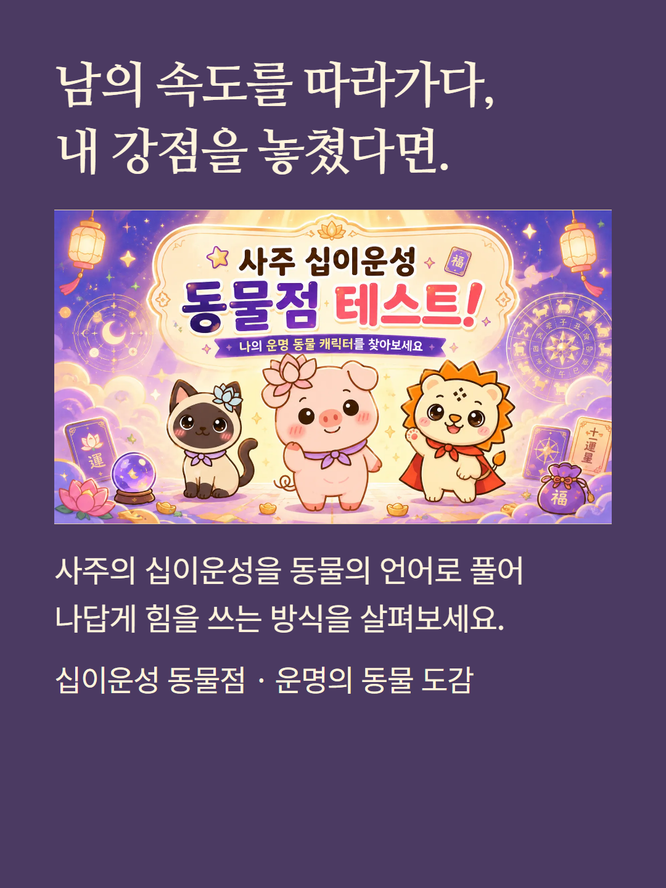
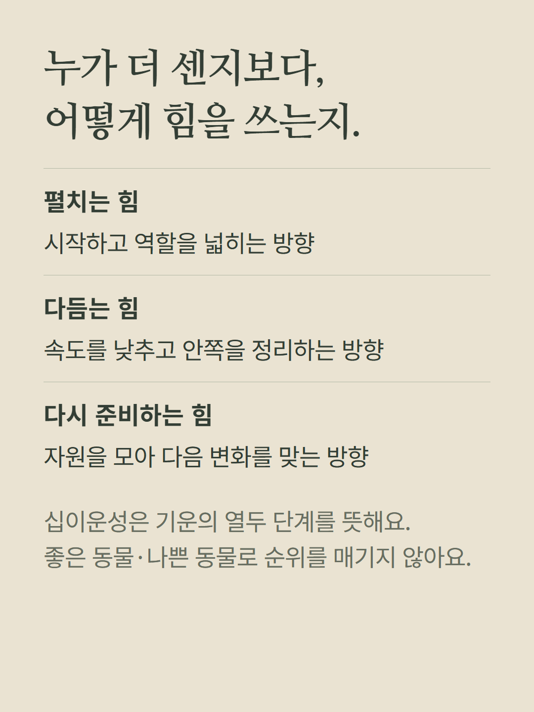
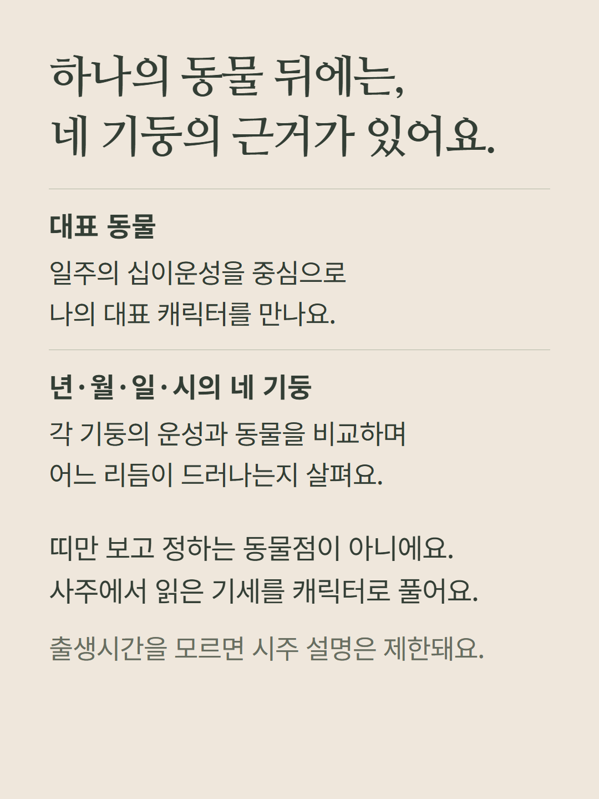
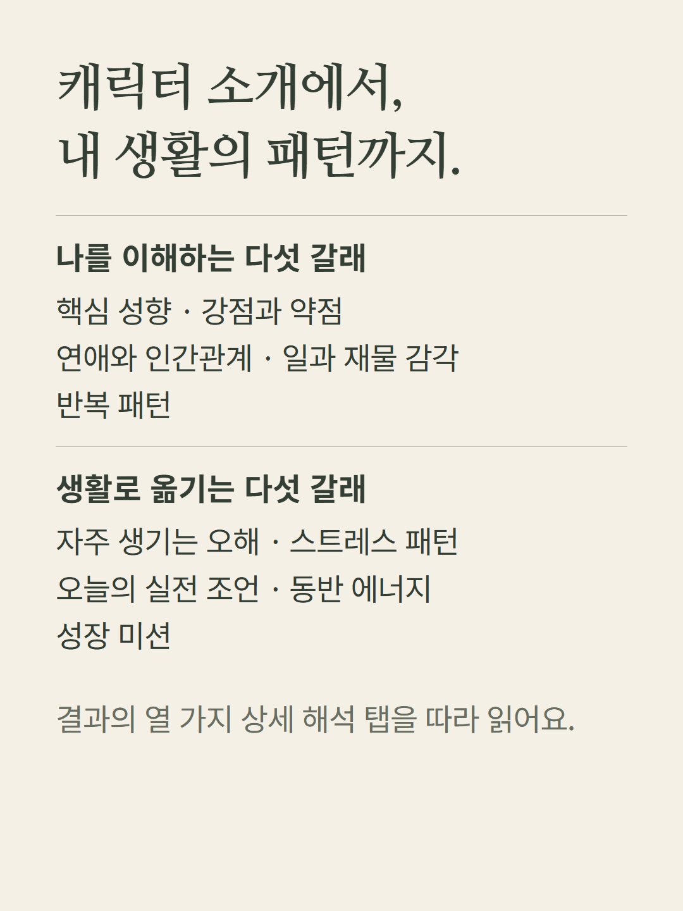
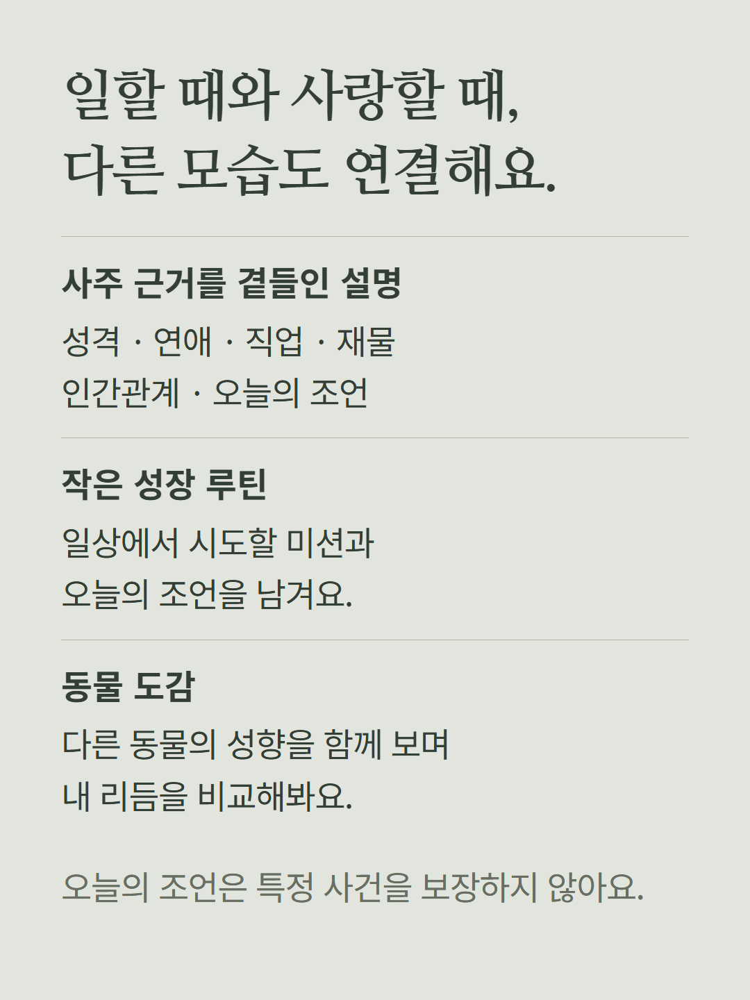
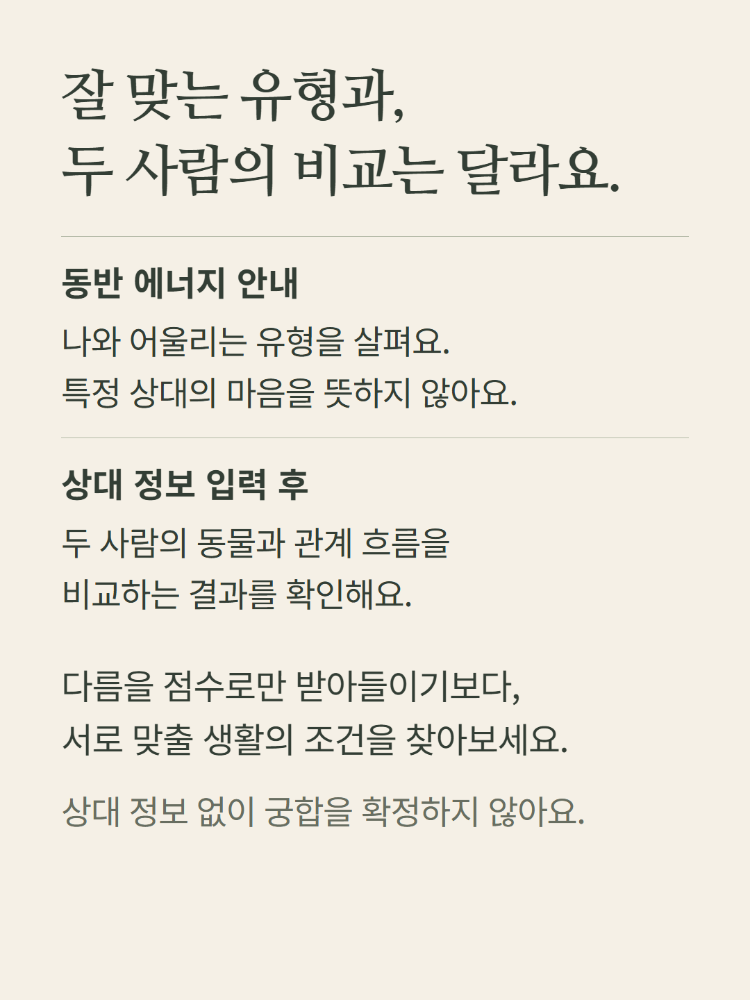
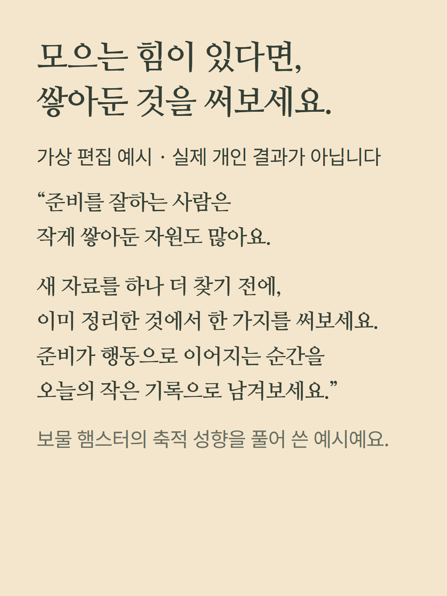
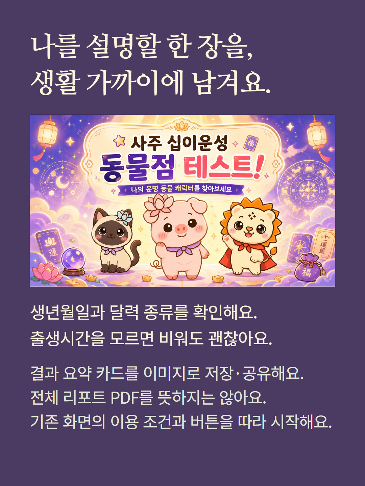

사주의 십이운성을 동물 캐릭터로 풀어 읽는 콘텐츠입니다. 띠 동물이나 실제 동물의 성격 검사와는 다릅니다. 생년월일과 양력·음력 구분을 입력하며, 출생시간을 모르면 비워둘 수 있습니다. 시간 미상에서는 시주 해석이 제한됩니다. 동반 에너지는 유형 안내이고 상대와의 비교는 상대 정보 입력 후 확인합니다. 예시는 가상 편집이며 카드 이미지 저장은 전체 리포트 PDF 제공을 뜻하지 않습니다. 기존 진입 화면의 이용 조건을 따릅니다.